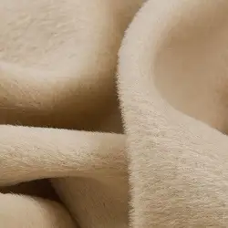

Кашемір
Надзвичайно м’яка й тонка матерія саржевого переплетення. Свою назву кашемір отримав на честь області Кашмір на півострові Індостан. Для його виробництва кіз не стрижуть, а вичісують гребнем особливий пуховий підшерсток.
Таким пухом обростають кози у гірських районах Китаю, Індії та Монголії, що пов’язано з мінливим кліматом цих місцин.
Сьогодні, для здешевлення виробництва, часто використовують кашемір з додаванням овечої вовни та, іноді, невисокого відсотку синтетичних волокон. Таким чином подібні вироби стають доступними для пересічних споживачів.
Кашемір не викликає алергії та є надзвичайно комфортним при носінні. А враховуючи високу зносостійкість виробів, можна стверджувати, що річ з кашеміру – справжній must have у будь-якому гардеробі.